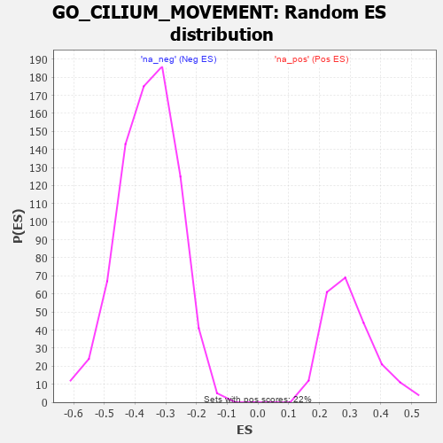

| | | Dataset | 7d |
| Phenotype | NoPhenotypeAvailable |
| Upregulated in class | na_neg |
| GeneSet | GO_CILIUM_MOVEMENT |
| Enrichment Score (ES) | -0.69937855 |
| Normalized Enrichment Score (NES) | -1.954826 |
| Nominal p-value | 0.0 |
| FDR q-value | 0.0019384704 |
| FWER p-Value | 0.017 |
Table: GSEA Results Summary
 Fig 1: Enrichment plot: GO_CILIUM_MOVEMENT
Fig 1: Enrichment plot: GO_CILIUM_MOVEMENT
Profile of the Running ES Score & Positions of GeneSet Members on the Rank Ordered List
| PROBE | GENE SYMBOL | GENE_TITLE | RANK IN GENE LIST | RANK METRIC SCORE | RUNNING ES | CORE ENRICHMENT | | 1 | RFX3 | | | 1171 | 0.451 | -0.1325 | No |
| 2 | STK36 | | | 1193 | 0.448 | -0.1203 | No |
| 3 | DDX4 | | | 1436 | 0.403 | -0.1374 | No |
| 4 | TTLL1 | | | 2764 | 0.189 | -0.2983 | No |
| 5 | TPPP2 | | | 4800 | -0.157 | -0.5495 | No |
| 6 | ASH1L | | | 5203 | -0.248 | -0.5919 | No |
| 7 | TMF1 | | | 5225 | -0.251 | -0.5862 | No |
| 8 | BBS4 | | | 5806 | -0.407 | -0.6457 | No |
| 9 | RGN | | | 6233 | -0.547 | -0.6812 | Yes |
| 10 | DRC1 | | | 6278 | -0.565 | -0.6679 | Yes |
| 11 | ARMC2 | | | 6363 | -0.602 | -0.6585 | Yes |
| 12 | BBS2 | | | 6383 | -0.608 | -0.6407 | Yes |
| 13 | TTLL6 | | | 6422 | -0.629 | -0.6245 | Yes |
| 14 | CELF3 | | | 6475 | -0.651 | -0.6094 | Yes |
| 15 | ZBBX | | | 6505 | -0.664 | -0.5910 | Yes |
| 16 | TTLL9 | | | 6657 | -0.743 | -0.5853 | Yes |
| 17 | OFD1 | | | 6692 | -0.758 | -0.5644 | Yes |
| 18 | KIF27 | | | 6750 | -0.786 | -0.5455 | Yes |
| 19 | TTC29 | | | 6967 | -0.917 | -0.5422 | Yes |
| 20 | NPHP4 | | | 6991 | -0.931 | -0.5141 | Yes |
| 21 | DNHD1 | | | 7032 | -0.961 | -0.4872 | Yes |
| 22 | TTC25 | | | 7094 | -0.992 | -0.4619 | Yes |
| 23 | HYDIN | | | 7173 | -1.049 | -0.4369 | Yes |
| 24 | TEKT2 | | | 7177 | -1.053 | -0.4022 | Yes |
| 25 | RSPH9 | | | 7265 | -1.137 | -0.3754 | Yes |
| 26 | ARMC4 | | | 7311 | -1.181 | -0.3418 | Yes |
| 27 | TEKT1 | | | 7349 | -1.220 | -0.3059 | Yes |
| 28 | WDR78 | | | 7396 | -1.261 | -0.2697 | Yes |
| 29 | WDR63 | | | 7411 | -1.276 | -0.2291 | Yes |
| 30 | SPEF2 | | | 7418 | -1.289 | -0.1870 | Yes |
| 31 | TEKT4 | | | 7539 | -1.455 | -0.1537 | Yes |
| 32 | GAS8 | | | 7540 | -1.455 | -0.1053 | Yes |
| 33 | IQCG | | | 7541 | -1.455 | -0.0569 | Yes |
| 34 | TEKT3 | | | 7658 | -1.657 | -0.0164 | Yes |
| 35 | DRC7 | | | 7667 | -1.676 | 0.0383 | Yes |
Table: GSEA details [plain text format]

Fig 2: GO_CILIUM_MOVEMENT: Random ES distribution
Gene set null distribution of ES for GO_CILIUM_MOVEMENT